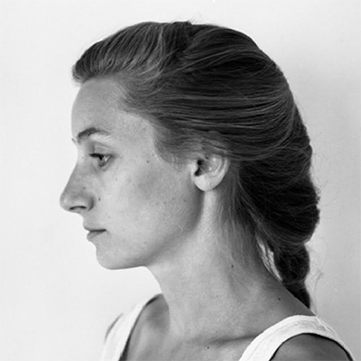
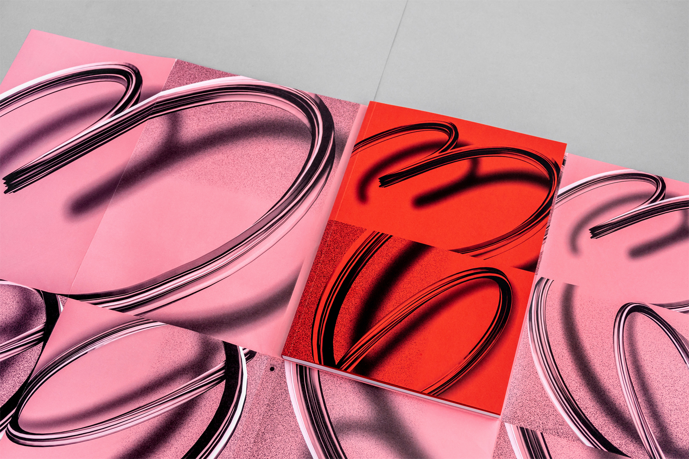
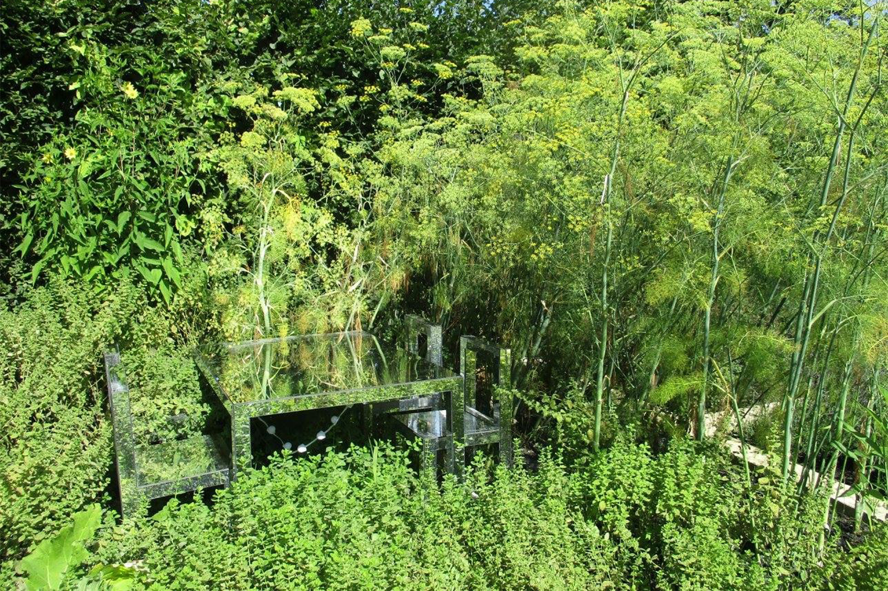
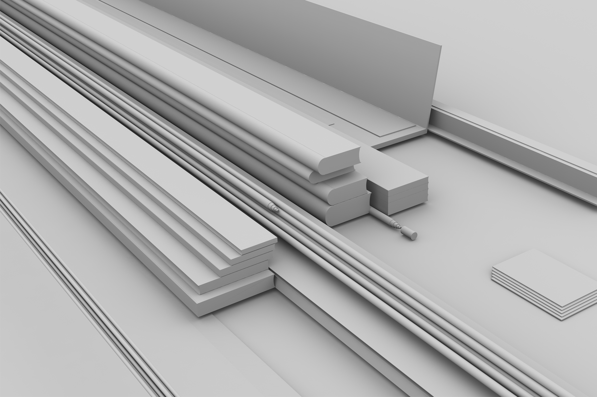
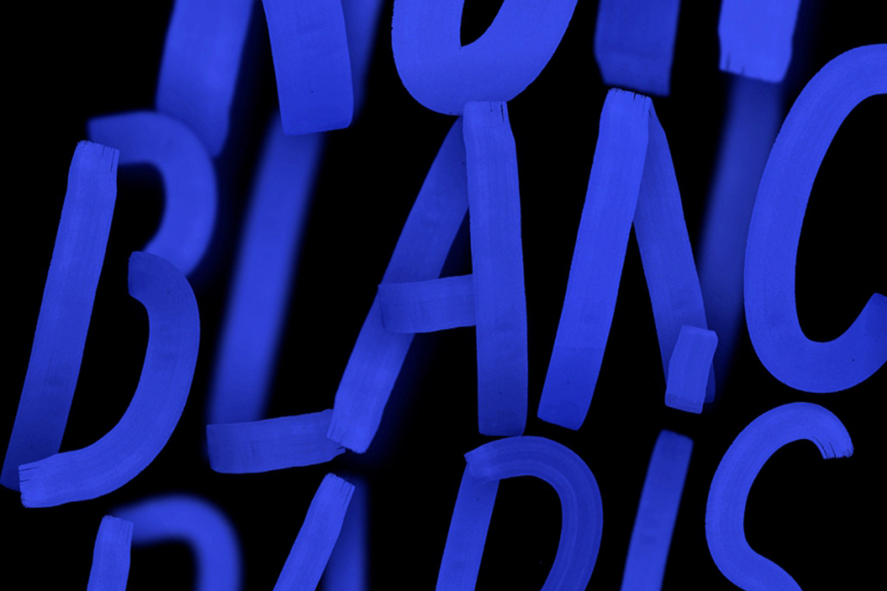
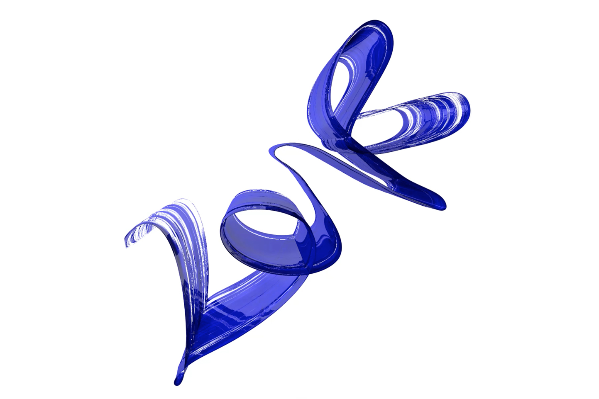
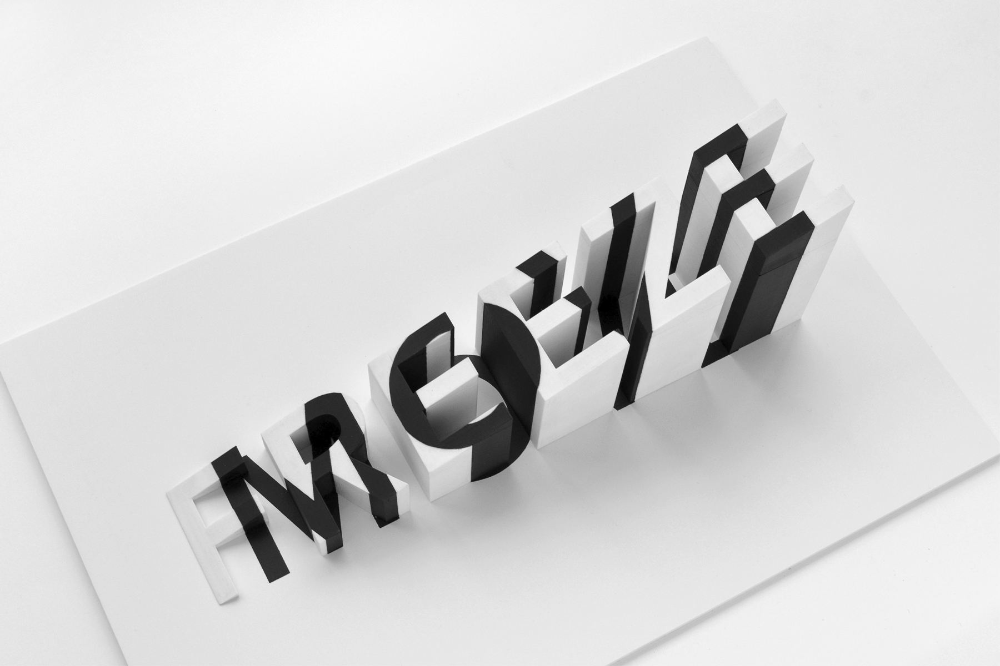
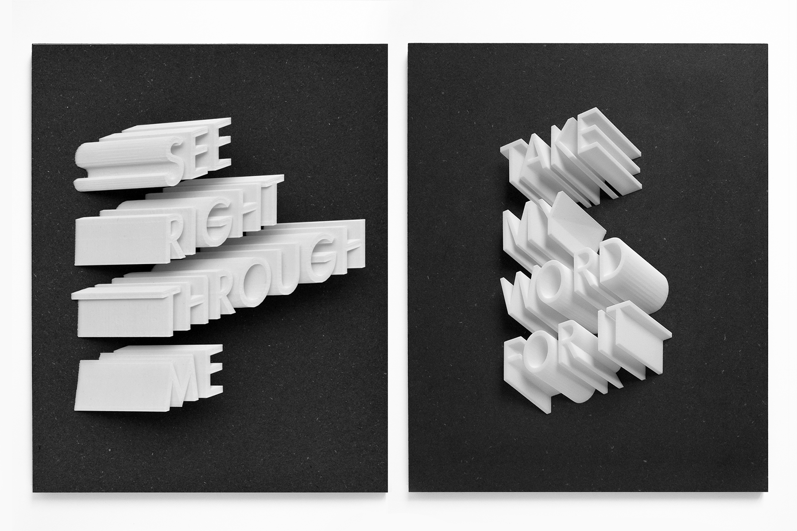

Camille Baudelaire is an artist and graphic designer based in Paris. In her work, she routinely collaborates with other artists, directors, curators, and galleries on projects related to publishing, communication, and scenographic installation. Here she discusses what it’s like to work as an artist between mediums, the complications of communicating your ideas to clients, and why trends and new technologies should be embraced and subverted rather than feared.
Camille Baudelaire Graphic designer, Visual artist
Art, Design, Process, Production, Inspiration
From a conversation with T. Cole Rachel
June 29, 2018
When people ask you what do you do, what do you tell them?
It’s hard because in France, people really like it when they can give just one single name to your job. They like a specialist. I’m always working between different domains and using different skills. I really am someone who works between different worlds though.
I’m really a graphic designer, it’s my structure and my formation, basically. I am specifically drawn to print and graphic design, like making books and posters, and all the techniques around printing. But I’m also interested in new media and technologies and I continue to work with different technicians for art shows and performances. I often work with different kinds of teams—developers, video makers, 3D makers, etc. I try to combine these two seemingly different things—traditional graphic design and new-media techniques—to create something that exists in between the two worlds.
Copyright: Atelier Baudelaire & GeneralPublic
Do you have your own specific creative practice that’s separate from doing commercial work?
Yes. I have my clients, but then I have my own personal work and research. Right now I’m focused on learning how to work more in 3D and with software [like] Cinema 4D. It’s really changing my practice, actually. I’m creating more motion design on Instagram, and changing the way I do all of my prints. I think it’s important—and I’m trying very hard—to change the proportion of time I spend on my own work and the time I spend on work for my clients.
I know a lot of graphic designers who struggle with that. Do you have a staff of people that you work with all the time?
Yeah, it’s a really small staff actually. I also work with other graphic designers, senior designers, on completing the conception of bigger projects. I’m always thinking of ways that I can work differently, to save more brain space for other things—different ways to organize, and different ways to work in the studio.
Copyright: Atelier Baudelaire & Élodie Dauguet
I love working with cultural clients here in France. By that I mean theaters, museums, festivals, and cultural institutions. It’s a challenge, though, with the austerity politics here—there is much less support for things like that. It’s hard to earn money from that kind of work, even though I love it. So that’s another balance I have to try and maintain—between private and public clients.
Do you find that when you’re dealing with private clients—as opposed to dealing with cultural institutions—that the collaborative process feels different? Is it harder?
It depends. I think in the cultural domain, at least in France, specialized designers are better to work with because they have a better idea of the big picture.
Copyright: Atelier Baudelaire & Jérémie Harper
When you work with private clients, sometimes it’s the same because there are a lot of people who work in high-level management, you know, who went to engineering schools and business schools, and they learn a lot about business, but they aren’t always knowledgable about graphic design. It can be hard to work with them, too. Part of the skill of this job is being able to communicate your ideas to people like that and convince them why something is a good idea.
A lot of these big businesses and cultural institutions in France are very old-school, very traditional. I spent a little time in the United States and I found that dealing with people there was sometimes different. It felt more organic. I’ve spent over 10 years learning how to deal with things like this though, and by now I’m OK with it, but it does feel like something they should teach you in school: How to manage projects, how to negotiate, how to establish your price.
That’s an important thing to understand. Even if you happen to be an amazing designer, if you aren’t good at collaborating or explaining your ideas or communicating with clients, then you’re not going to be successful.
40% of my job is just creating good energy. It’s about learning what a client needs, organizing the process, and explaining everything. It’s a lot of communication. That’s almost half of my job, I think. Then you have 20% of your time spent doing administration stuff, and then the rest—what is left—is actually on creation. Time wise, that part is often really small.
Copyright: Atelier Baudelaire & GeneralPublic
Do you have a particular way that you like to work? Or particular strategies for when you feel like you’re stuck or something doesn’t feel right?
I spend a lot of time just surfing on the web or on Instagram. I watch a lot of movies. It’s interesting to me to see what other kinds of images are popular. I’m into that. I usually draw things first, because sometimes I have images in my head, and I have to draw just to fix it, to remember it.
And sometimes, I just start from my computer with my tools, discovering through experiments. For example, when I started using Cinema 4D, I didn’t know anything about the software. But just watching the videos on YouTube, of the people who do tutorials, and trying by myself, sometimes these new forms just burst through. The process is usually a mix of watching, experimenting, and having an impulse, or a vision of something.
Many of the objects I make involve experimenting with 3D printing, which is kind of a long process. When I first started it took a long time to get results. With 3D printing you have to wait hours to see the results. So it’s a really slow process. At the moment, I have a project with slime. So it’s a really tangible project with interesting materials. It’s not really virtual—it’s a project I do with my hands. So many of the images I like to imagine are a mix between 3D and tangible materials. I’ve always been interested in that, so I continue with this sort of research. I’m always exploring new tools.
Living in a city, you’re constantly bombarded by design. Design is everywhere. We’re always absorbing it, even when we don’t realize we are. How do you avoid being influenced by design trends?
I think it’s almost impossible to avoid trends. I think we’re a society where everything is so influenced by design. The way images function on social networks like Instagram is so powerful. And it’s always changing. For example, now the posters in the subways are actually animated. There’s always just so much to look at.
It’s really hard not to be influenced by all that stuff, or influenced by the way we experience things through a computer or phone screen. I try and accept that and use it, actually. Trends are things that you can examine and try to implode in some way. For example, I’m fascinated by this weirdly satisfying trend that you see a lot on Instagram now of people making these crazy, repetitive things with slime or images of something cutting into some sort of soft material. It’s very relaxing. I was thinking about that as a phenomenon and kind of a social point of view.
While we are often talking about the ways that we need to extract ourselves from computers and phones, from being constantly stimulated by them and watching them all day, now you see how we use those exact same things to relax us and make us feel better. Despite all the stress that computers and technology give you, all the over-stimulation, we will still use computers and video screens as a means of relaxation. I find that really interesting, so I’ve studied it more and more and tried to figure out ways to do something with that.
I’m really like a surfer, and I see all these trends—these big popular trends and commercial trends today—and I’m surfing on that. And I’m using it to make new and crazy shapes for myself. I think that’s what most artists actually do. Of course, there are always people who are trying to work outside of that, but I think I would find that really frustrating. For me, instead of pushing back against trends and technology, I’d rather grow along with them and use them somehow.
Copyright : Atelier Baudelaire & Jérémie Harper
I used to be really against Instagram, for example. I just saw all the bad sides of it. But eventually I learned how to play with it and use it as a tool, and now I find it very interesting. I like to be attentive to what is going on and also to be in contact with young people, kids who have just finished school. I feel like I’m between these two generations of artists—working with senior-level people who come from a world of doing every drawing by hand, and these younger students and designers who don’t really know how to work with a pencil. I find it rewarding to have learned from both the older and, now, the younger. You can always learn something new.
What advice do you have for young designers about either building a body of work or how to enter the design world?
My advice is to always search and always keep learning. I think it’s a good attitude to have. Don’t wait for people to tell you what to learn and what to do. Always be self-motivated. I like the people who have this kind of personality, who are really curious and have a certain autonomy about how they learn new things.
I think what is wonderful today, with the internet, is that you can learn almost anything. I also tell people to just insist on doing things the right way, to persevere, and to be as independent as you can. Find your own path. Also, just be confident in what you think and in what inspires you. I think that is really important. I always appreciate that quality in the people I work with, and as a result, I try to give them a lot of liberties. I think it’s cool if people can express their intelligence and creativity and have bold ideas. It seems like such a common-sense thing to say—be bold, have big ideas—but you’d be surprised by how many people don’t.
Copyright : Atelier Baudelaire & Jérémie Harper
Camille Baudelaire recommends: